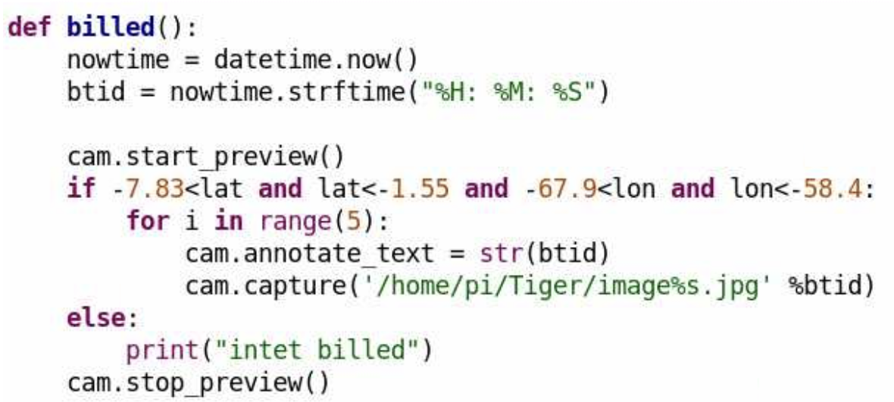
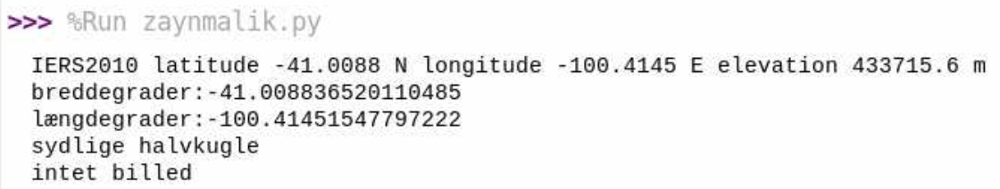
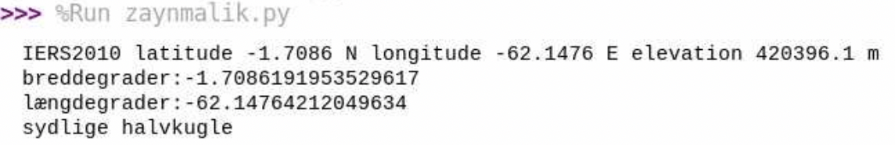
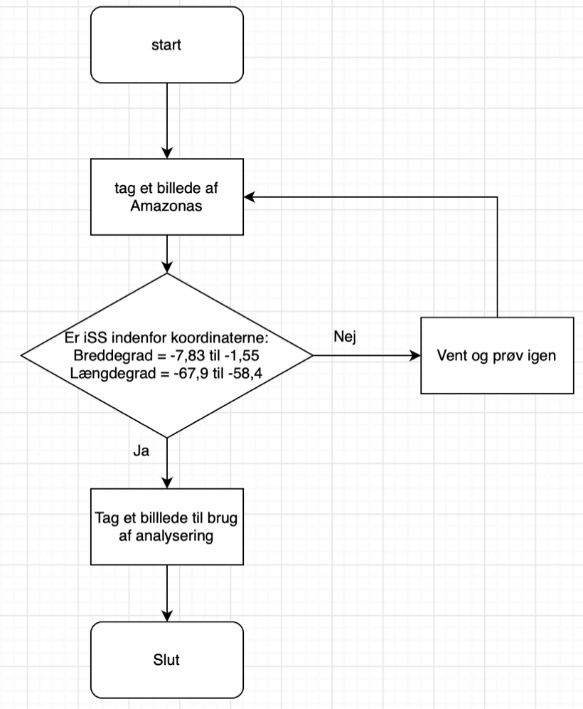

Astro-pi
Jeg har arbejdet sammen med Matilde, Sara og Alba
Projektbeskrivelse
Vi vil gerne undersøge, hvordan planter har det i to forskellige skove, der er placeret to forskellige steder. For at gøre dette vil vi bruge et infrarødt kamera, som vil kunne fortælle om planterne befinder sig i et godt eller dårligt miljø. Det kan man bruge det infrarøde kamera til, da det kan vise, hvor meget nær infrarød stråling planterne udsender. Dette indikerer nemlig densiteten og helbredet af planterne i det givne område. Til slut vil vi sammenligne de to skove, og se hvilken destination, der er mest optimal for planter at leve i.
ESA’s specifikationer
ESA har en masse forskellige specifikationer, som ens projekt skal være indenfor. En af disse er at det skal være et videnskabeligt projekt og ikke et spil. Dette har vi opfyldt ved at undersøge planters levestandarder i et specefikt områder, nemlig Amazonas, hvilket er videnskabeligt og ikke er et spil. Et andet krav er at forsøget ikke skal afhænge af en specifik begivenhed, som muligvis ikke vil finde sted i løbet af de tre timer. Dette lever vores projekt op til da vores forsøg ikke afhænger af nogen specifik begivenhed for at kunne finde sted. Et af ESA’s andre krav er, at forsøget ikke må kræve yderligere udstyr eller adgang til noget andet på ISS, hvilket vores projekt lever op til, da der ikke er behov for noget andet for at udføre vores forsøg. ESA har også nogle specifikke krav til ens kode. Nogle eksempler på disse er kravene: ens program skal bruge mindst en Sense Hat sensor eller kameraet, ens kode må ikke indeholde ondsindet kode, som bevidst prøver at forstyrre systemets funktionalitet og ens program skal ikke bruge netværk. Vores kode lever op til disse tre krav, da vi gør brug af kameraet, vores kode indeholder ikke nogen “ondsindet” kode og den skal ikke bruge netværk.
Beskrivelse af sensor
Dataen vi vil samle er billeder af to forskellige skove med et NDVI-filter. NDVI-filteret er et vegetationsindeks, som indikerer planternes sundhed baseret på, hvordan planter udsender bestemte bølgelængder i det elektromagnetiske spektrum. Det er cellestrukturen i planterne, som udsender nær-infrarød stråling, hvilket betyder at når planterne udfører fotosyntese, og de dermed vokser, vil planterne indeholde flere cellestrukturer. Dette betyder at sunde planter udsender mere NIR end planter som ikke trives. Så ved at tage billeder af to forskellige skove, vil man kunne bestemme hvilket sted planterne trives bedst.
Gennemgang af kodestumper

Denne kode bruges til, at tage billeder af vores valgte destination Amazonas. Dette gøres ved at lave en if-statement, som ses i linje 6, hvor vi skriver at hvis ISS er indenfor de breddegrader og længdegrader der er skrevet, så skal den tage et billede.
Beskrivelse af testmåling
Når man løber vores program vil det være muligt med to forskellige output
Den første testmåling af ISS ikke over Amazonas:
Det første udkom af testmålingerne er hvis ISS-sensoren ikke er over Amazonas. I dette tilfælde vil den måle længde- og breddegrad af sensorens lokation og hvor højt over jorden den befinder sig. Ud fra dette ved den, om den er indenfor det givne område, nemlig Amazonas, og når den ikke er det, som i dette tilfælde, så tager den ikke et billede og siger “intet billed”.

Den anden testmåling er ISS over Amazonas:
Det andet udkom af testmålingerne er hvis ISS-sensoren er over Amazonas. I dette tilfælde vil den igen måle længde- og breddegrad af sensorens lokation og hvor højt over jorden den befinder sig. Den vil igen ud fra dette vide om den er indenfor det givne område, nemlig Amazonas, og når den er det, som i dette tilfælde, så tager den et billede, som ligger vedhæftet nedenfor. Det er et billede af vinduet i klasselokalet.

Flowchart
